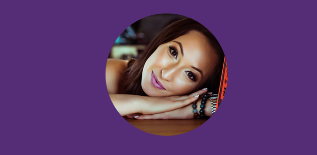

Sintonizar com o Universo e Colocar ideias em movimento!

Esta é a minha missão diária. Acredito que a vida é um grande palco para a evolução em todos os espaços, energias e consciências. Nossa história, as experiências que vivemos e atraímos são indicadores da intenção da nossa vida. Cada decisão que tomamos, vai moldando e criando nosso destino. E no meu espaço virtual convido você a conhecer mais um pouco sobre mim e meus passos inicias como Desenvolvedora Web. Uma incrível experiência para mim. Vamos lá?
Esta é a minha missão diária. Acredito que a vida é um grande palco para a evloução espiritual. Nossa história, as experiências que vivemos e atraímos são indicadores da intenção da nossa vida. Cada decisão que tomamos, vai mildando e criando nosso destino. Neste espaço virtual você pode conhecer o meu trabalho e a sua natureza astrológica. Vem ver o que está rolando agora!
Sua história
Apresenta um canal noYOUTUBEcom vídeos e reflexões semanais de acordo com os movimentos astrológicos. Possui um Gui Astrológico 2020 intitulado 'Livro' que segue uma agenda de ferramentas com conexões para o cotidiano. Tem a implantação de um Kit com 4h de aula sobre os principais eventos planetários de 2020 + conteúdo exclusivo de planejamneto e rituais por signo. Autora de um Programa Online para cada indivíduo interessado em descobrir e mapear os códigos asrológicos da vocação pessoal em 5 meses, com acompanhamento pessoal da astróloga. Em seu espaço virtual há a possibilidade de explorar os conteitos essenciais para apreender e compreender astrologia. Assim como, uma Playlist de intenções para os signos, rituais de lua nova e cheia, eclipses, e inspirações para o dia a dia.